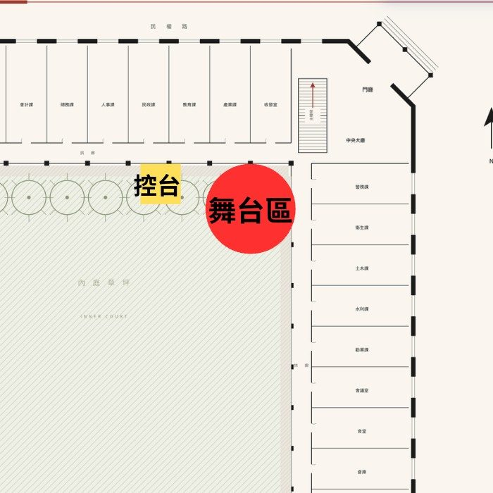

DATE · 2027

紅磚拱廊、棕櫚樹影，
一張野餐墊，一個爵士午後。
把百年古蹟，
變成城市的客廳。
帶上野餐墊，席地而坐。在冬日暖陽與微風之間，讓爵士樂的即興與律動，和州廳的靜謐美學相互交織。
本次「臺中州廳草地爵士音樂」以城市歷史場域的「日常化」為核心出發，回望臺中州廳自日治時期以來所承載的記憶與文化層疊。州廳融合西方古典語彙與日治時期官署設計，展現仿歐洲巴洛克式的華麗與新古典的優雅；本次活動將打破官署建築的嚴肅與距離感，將展演視角延伸至州廳充滿綠意的草坪，讓這座宏偉的「百年古蹟」成為最美麗的戶外舞台背景。
活動亦呼應州廳歷經整建修復後重新啟用的重要時刻。我們認為，真正的「歷史再啟」不僅是空間的修復，更是讓古蹟重新回到市民的「公共文化生活」之中。邀請民眾帶著野餐墊來到草地席地而坐，州廳將褪去昔日的威嚴，轉化為一座充滿溫度、連結過去與未來的「城市客廳」。
演出主題從建築語彙中的「宮廷秩序」，轉化為「午後慵懶的愜意時光」。音樂策展呼應州廳「日洋融合」的跨文化語境，打造一場「零距離的沉浸式草地野餐音樂會」，讓觀眾在輕鬆搖擺的節奏中，重新感受臺中州廳的歷史厚度與嶄新的城市風華。
紅磚拱廊、棕櫚樹影，
一張野餐墊，一個爵士午後。


台中最大的搖擺舞社群，帶你認識發源於 1920～1940 年代紐約哈林區的搖擺舞（Swing Dance）——一門隨著搖擺爵士樂歡快舞動的雙人社交舞。
沒有繁複嚴肅的舞步規範，也不需要死記動作。不論是爵士樂愛好者、想放鬆的上班族，或帶著孩子的家庭，都能隨音樂跨出第一步。

讓音樂回到城市，
也回到生活裡。
我們相信爵士不只發生在舞台上，更應融入日常的每一個時刻。
從一杯飲品、一段旋律，到老建築裡的相遇——MileSpace 持續以現場音樂、空間策展與城市文化為核心，點亮地方的生命力。